|
||||||||||||||||||||
|
24 août 2013 - Victoria, fin de l'épopée canadienne Victoria contrôlait jadis le détroit de Juan de Fuca, empêchant l'invasion du Canada par les hordes de pirates sanguinaires venus de l'ouest. Nous y sommes arrivés aujourd'hui, jetant l'ancre en face du RVYC (Royal Victoria Yacht Club). Je me suis aussitôt rendu en dinghy à la marina pour me renseigner sur les formalités de sortie et la station de remplissage des bouteilles de gaz la plus proche.
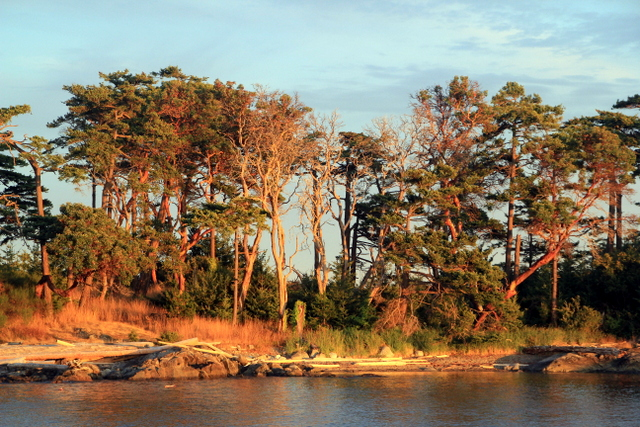 Fin de journée sur Chatham Islands Curieusement, la première réaction du manager de la marina ne fut pas de m'indiquer tel ou tel endroit mais bien de me demander si j'étais membre d'un Yacht Club outremer. Comme je ne voyais pas le rapport entre ma question et sa réponse, j'ai failli lui demander s'il aimait les carottes ou s'il portait des sous-vêtements en dentelle, mais je me suis abstenu car je ne pense pas qu'il aurait compris mon message. Au contraire, poliment, je lui ai confirmé que j'étais un membre éminent d'un non moins éminent Yacht Club, ce qui rassura le monsieur qui, dès lors, m'inonda de renseignements divers. Merci Hawaii ! C'est en effet là que j'ai appris que cette question ("Vous êtes membre d'un Yacht Club?"), que l'on vous pose à brûle pourpoint, apparemment sans rapport avec quoi que ce soit, est une sorte de sésame en Amérique du Nord, à condition bien sûr de répondre par l'affirmative... même si vous n'êtes membre de rien du tout, comme nous.
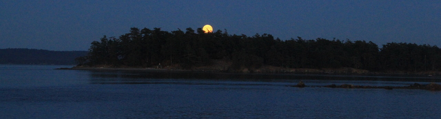 Toute fin de journée, la lune se lève C'est curieux cette obsession de n'accepter voire de ne parler qu'à des membres d'un Yacht Club. Moi qui pensais naïvement qu'en tant que marins au long cours, nous serions bien accueillis en chaque port... Quelle déconvenue. Surtout que sur les 2 mois que nous avons passés au Canada, nous avons croisé 2 bateaux battant pavillon non US/Canada. C'est dire qu'ils ne sont pas menacés d'invasion par les bateaux de passage... C'est probablement la proximié des US qui exacerbe le sentiment de propriété des locaux et les oblige à bien faire sentir à leurs visiteurs qu'utiliser leurs installations est un privilège exclusif. Quoi qu'il en soit, nous allons mettre le cap au sud, vers Port Angeles, afin de recevoir quelques leçons de morale pour notre propre sécurité auprès des douanes américaines. Ensuite, nous nous mettrons en attente d'une bonne fenêtre météo et, vers le début du mois prochain, nous cinglerons vers le sud et la chaleur (car ça fraîchit un peu ces derniers temps par ici, il faut bien le dire). Nous atteindrons San Francisco vers le 7 septembre, à 15h39, si le vent est porteur comme prévu. L'air de rien, on aura quand même navigué près de 700 miles au Canada !! |
||||||||||||||||||||
|
21 août 2013 - Sidney, pause pipi On était déjà passé à Sydney en voiture, mais il nous restait Sidney en bateau. C'est maintenant chose faite. La ville est toute proprette et pleine de vieux. Sans grand intérêt donc. Sauf si on est vieux, contrairement à nous.
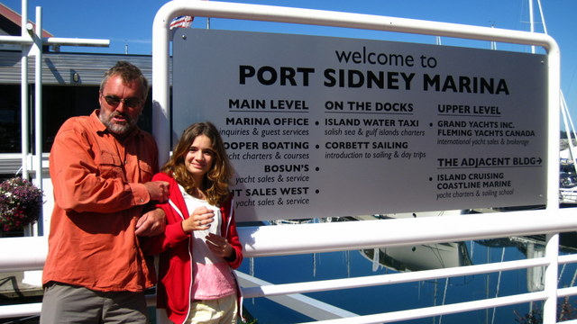 L'entrée de la charmante marina de Sidney Profitant d'une faute d'inattention des officiels, nous avons jeté l'ancre juste en face de la marina et nous nous sommes faufilés en annexe jusqu'au ponton avant de nous débarrasser de nos poubelles dans les bacs prévus à cet effet. Nous avons ensuite utilisé leur Internet sans vergogne avant de ne pas utiliser leurs installations portuaires, ce qui nous aurait coûté $75 la nuit.
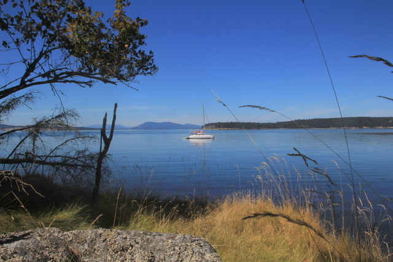 Let It Be devant D'Arcy, Sidney au loin Sans attendre, nous avons envahi le supermarché local et, en moins d'une heure, Let It Be était rempli de vivres. Nous avons même trouvé de la farine 'spéciale pour boulangers'. Depuis que nous avons acheté 50 kg de farine de boulanger industrielle à Ua Pou ce qui nous a permis de faire du pain qui ressemble à du pain, nous cherchons désespérément à en retrouver. Dans chaque grande surface que nous fréquentons, nous ne manquons pas d'acheter quelques kilos de farine super extra mega géniale mais qui s'avère, à chaque fois, totalement incomparable avec notre trésor des Marquises.
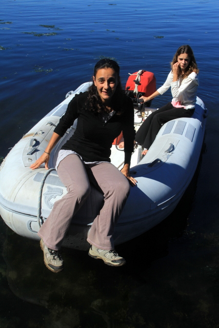 Kenya débarque Cécile à terre Après une nuit passée face à la marina, nous sommes partis vers d'autres aventures, en la prestigieuse île d'Arcy. Comme d'habitude, quand il n'y a pas de petite ancre dans la baie sur les cartes marines, il n'y a personne au mouillage et nous avons non seulement pu jouir d'une totale quiétude mais aussi d'un accès à l'île, classée parc marin par les autorités.
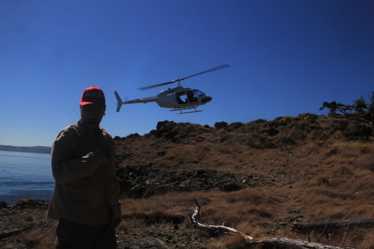 Un riche touriste vient nous demander un autographe en hélicoptère En clair, il n'y a pas d'habitations sur l'île mais bien des sentiers de rando à peine balisés. De toutes façons, l'île couvrant une superficie d'un km², on ne risque pas de se perdre. N'empêche, on s'est promené pendant 2 heures sur l'île, profitant une fois de plus du soleil canadien.
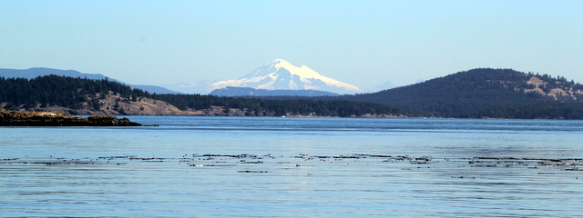 Au loin, le Mont Baker a l'air sorti d'un trucage d'Andrew Kramer Nous approchons doucement de la fin de notre périple au pays de la feuille d'érable et l'heure des bilans approche. Le moins que l'on puisse dire est que l'on a adoré ce court voyage, en particulier les mouillages d'un calme presque suspect, sans vent ni vagues. On est d'autant plus anxieux qu'on va retrouver les névrosés américains dans les jours qui viennent. Mais profitons de la vie au jour le jour... |
||||||||||||||||||||
|
16 août 2013 - Bedwell Harbour, ascension du Mont Norman Dans le cadre de notre programme de remise en forme, nous avions décidé d'entreprendre l'ascension du Mont Norman, point culminant de l'île avec ses 240m. Ses flancs sont si abrupts qu'il fut un temps, lointain certes, où, perchés au sommet du volcan, tels des corbeaux, les grands prêtres esquimaux organisaient de grandes cérémonies sacrificielles au cours desquelles il n'était pas rare d'offrir aux dieux des victimes humaines précipitées dans le vide tels des... euh des... des offrandes.
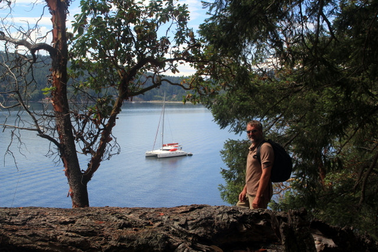 Départ de la ballade Aujourd'hui, il ne reste rien de ces victimes que l'on jetait du haut des falaises, si ce ne sont des otaries. D'ailleurs, je me demande si toute cette histoire ne serait pas une invention destinée à attirer le chaland en ces lieux pittoresques.
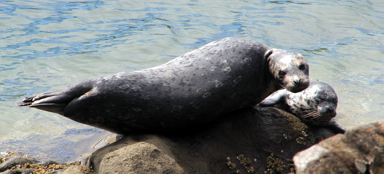 Les otaries nous regardent passer Quoi qu'il en soit, les otaries qui se dorent la pilule sur les rochers pendant qu'on travaille, nous ont regardé rejoindre la côte en dinghy sans sourciller. Nous nous sommes ensuite enfoncé dans la forêt, sans toutefois quitter le chemin qui zigzaguait en montant vers les sommets.
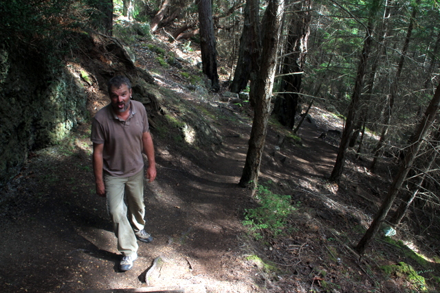 La montée est raide Il nous a fallu un peu moins d'une heure pour gravir la colline. Du haut du promontoire, on avait une vue presque panoramique sur les îles alentour. En contrebas, on voyait même Let It Be, seul dans son mouillage.
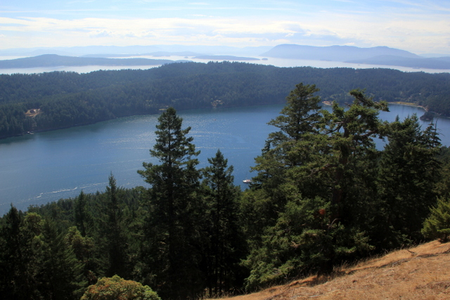 Vue de Mount Norman (avec Let It Be tout en bas) Par cette belle journée ensoleillée, nous avons profité de notre solitude interstellaire pour nous livrer à des activités bien innocentes: papotage, farniente, photographie d'art et persiflage. Comme les enfants avaient refusé notre proposition de rando, sous prétexte qu'ils devaient 'travailler' sur le PC, nous étions, Cécile et moi, laissés à nous-mêmes, obligés de parler de nos projets d'avenir, grandioses et ambitieux, cela va de soi, mais non divulguables pour l'instant, pour des raisons de discrétion bien légitime.
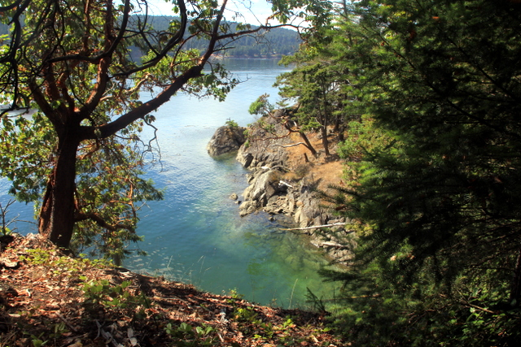 Fin de la ballade, on attend le watertaxi privé au bord de l'eau... A notre retour, les otaries avaient disparu et il faisait si chaud que j'envisageais sérieusement de plonger dans l'eau claire. Cécile, constatant que je déboutonnais mon pantalon, se méprit sur mes intentions. "Pas maintenant...pas ici...On pourrait nous voir !!!", me dit-elle, épouvantée par une telle outrecuidance. "Rassure-toi", lui dis-je en souriant, "Je vais juste piquer une tête". "J'ai mesuré la température de l'eau ce matin...", me répondit-elle un rien narquoise, "...12°C". Sans commentaire, j'ai reboutonné mon pantalon, bien décidé que la prochaine fois ne serait pas aussi vaine. De fait j'avais raison...eh eh eh... |
||||||||||||||||||||
|
14 août 2013 - Thetis Island Notre permis d'ancrage étant échu, nous avons dû quitter Vancouver, non sans regret. Le mouillage au centre ville nous plaisait bien. Vancouver restera certainement comme un point d'orgue dans notre périple canadien, tant par la verdure de ses quartiers urbains que par le 'french touch' de sa gastronomie. C'est un endroit où il fait bon vivre et où l'on ne sent pas trop la fébrilité inhérente aux grandes villes.
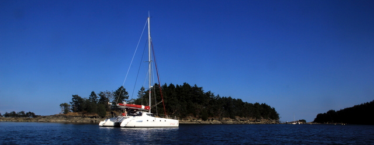 Let It Be devant le West Vancouver Yacht Club Néanmoins, les 14 jours d'ancrage gracieusement octroyés par les autorités étaient écoulés et nous avons repris la mer. Enfin, il ne faut pas exagérer, les fjords de la Colombie Britannique, c'est quand même pas les 40èmes rugissants. Nous avons mis le cap à l'ouest, en direction du West Vancouver Yacht Club, où nous avons passé une nuit fort calme. On a même profité de la matinée pour se promener sur l'île Valdes, ce qui nous a permis de confirmer une fois de plus que la nature est magnifique par ici.
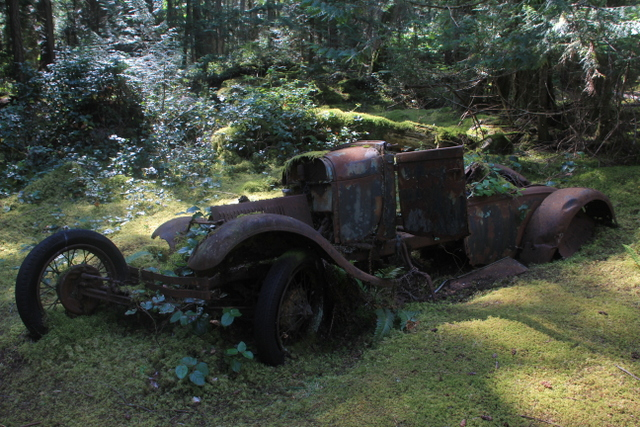 Il y a 60 ans, le mec a oublié où il avait stationné son pick up Ford T Le lendemain, je tenais absolument à visiter Thetis Island, en souvenir d'un bateau que nous croisâmes jadis aux Gambier: Thetys. Arrivés vers 12h30 dans une baie protégée au nord de l'île, nous avons jeté l'ancre face à un ponton, bien décidés à profiter de la vie et d'un plan d'eau serein pour ne rien faire au soleil.
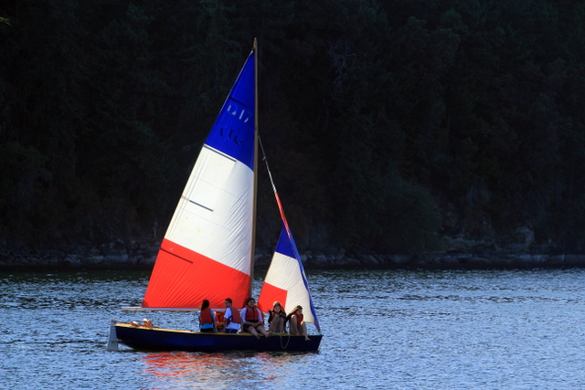 Bateau école, tous à l'ombre de la voile Erreur colossale, Thetis s'est révélée comme Thetys, pleine de surprises et d'activité débordante. Sans doute étions-nous arrivés en plein déjeuner car vers 14h, nous avons vu se manifester tout ce que l'eau peut offrir comme activités: ski nautique, kayak, voile, etc. En moins de 5 minutes, Let It Be s'est trouvé au centre des activités d'un camp de vacances pour jeunes que nous n'avions pas repéré en arrivant. Je les ai laissés faire leurs pitreries autour du bateau jusqu'à 21h. Ensuite, j'ai sonné la fin des activités et tout le monde est allé dormir, sauf probablement quelques énergumènes aux hormones laborieuses qui n'ont rien trouvé de mieux que de tenter une improbable partie de jambes en l'air dans les fourrés alentour. Curieusement, ceux-là étaient plutôt soucieux de ne pas se faire repérer, d'où leur extrême discrétion, fort heureuse pour mon sommeil. |
||||||||||||||||||||
|
8 août 2013 - Vancouver, petite promenade estivale Alors que le centre ville s'embrase au soleil de midi, l'équipage de Let It Be s'en est allé à la campagne, profiter de l'air pur et des vertes vallées.
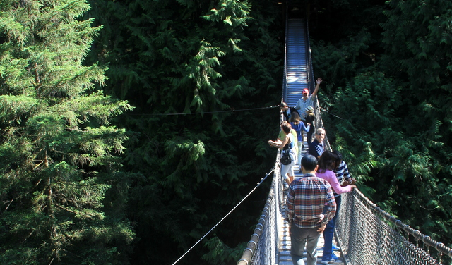 Le pont suspendu Pour être honnête, il faut préciser que Vancouver est une ville bien aérée et fort boisée. On y trouve non seulement de nombreux parcs mais même les artères du centre ville sont bordées d'érables. En outre, sur notre plan d'eau, caressé par l'air du large, on ne souffre pas de la chaleur. Il fait juste bon.
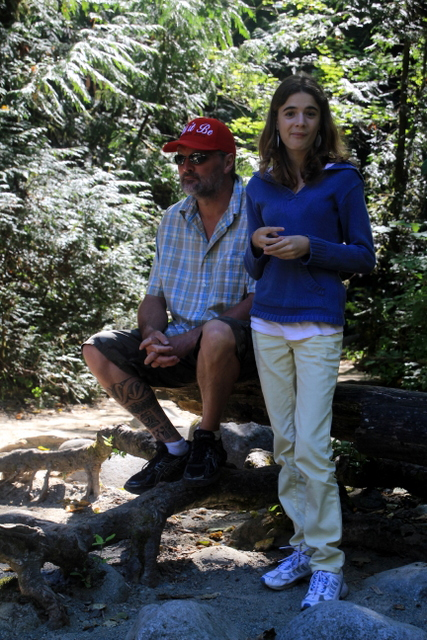 Eric et Kenya en plein effort Quoi qu'il en soit, nous avions décidé de nous laisser guider par Ann et Dirk, Vancouverois depuis 50 ans. Ils nous ont d'abord emmené sur un pont suspendu au-dessus d'un ravin aux pentes escarpées. Nous y avons fait une petite promenade dans la forêt, le long d'une rivière aux eaux limpides mais froides. Mais limpides quand même. Mais trop froides pour s'y baigner. Enfin, pour des gens sains d'esprit, comme nous, parce que de jeunes autochtones s'amusaient à sauter des rochers alentour, inconscients des risques d'hydrocution.
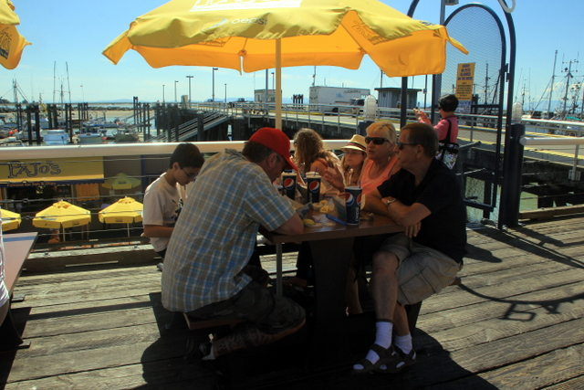 On mange dans le port Ensuite, nous nous sommes rendus à Steveston, au sud de Vancouver, afin de déguster le meilleur Fish'n Chips à l'ouest du Pecos. De fait, c'était délicieux. Sur l'estacade, nous nous sommes agglutinés autour d'une table percée afin de nous rassasier. Au début, je n'avais pas compris l'utilité des trous dans la table, trop larges pour retenir un verre. En fait, ils sont destinés à accueillir les Fish'n Chips que l'on sert dans des papiers journal, exactement comme les frites chez nous... Vous plantez votre cornet dans le trou en face de vous et vous avez 2 mains pour manger !
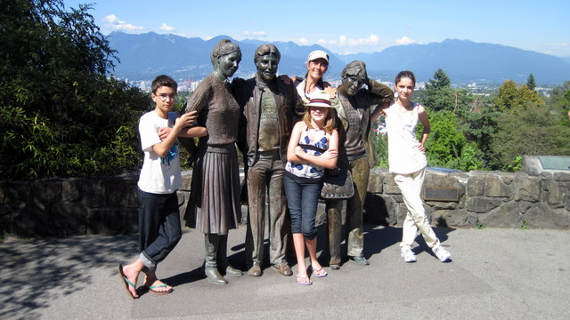 Photo blindée Pour terminer, nous avons visité un volcan. Depuis que nous sommes propriétaires du Kilauea, nous ne ratons pas une occasion de valider la perspicacité de notre achat. Il faut dire que le volcan de Vancouver n'est plus actif depuis bien longtemps et ressemble vaguement à une colline. Ses entrailles servent de réservoir à eau douce pour la ville tandis que feu son cratère est orné de plantes magnifiques, agencées fort agréablement pour agrémenter le déambulage des badauds.
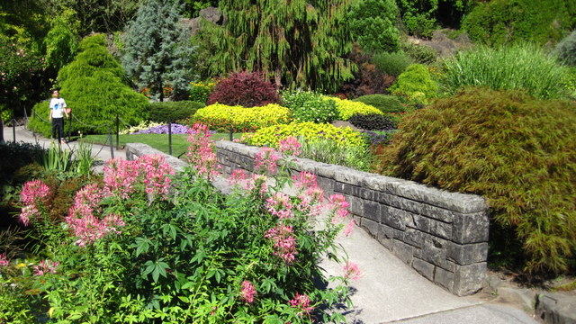 Détail du cratère, avec Sidney le singe |
||||||||||||||||||||
|
5 août 2013 - Vancouver, downtown De retour sur Let It Be, nous profitons de l'activité grouillante du centre ville, même si celui-ci est lacustre. Les aquabus continuent à sillonner le chenal, charriant touristes et badauds tandis que les yachts à moteurs passent sous nos yeux, souvent ornés de donzelles à moitié nues, posant pour l'éternité et le plaisir des vieux satyres lubriques de mon engeance.
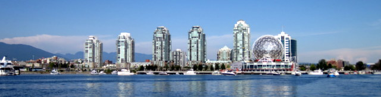 Architecture futuriste Ce dimanche, nous avions rendez-vous avec Dirk et Ann, que nous avions rencontrés à Rarotonga en 2010 et que nous avions cotoyés pendant quelques mois à Whangarei. Ils ont revendu leur bateau en Nouvelle Zélande et sont de retour aux affaires à Vancouver, même s'ils ont tous deux largement dépassé l'âge de la pension. Ca nous a fait tout drôle de les revoir après 2 ans...
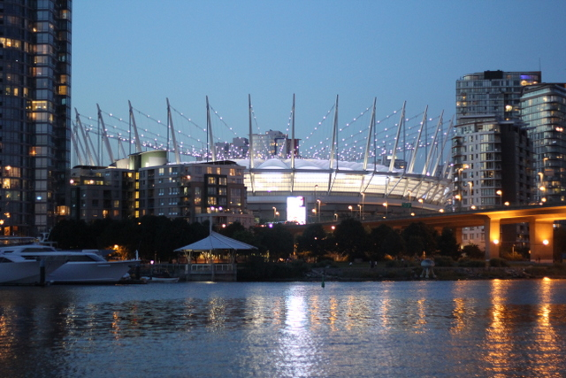 Le superdôme s'illumine à la tombée du jour On a également profité du retour à la ville pour passer chez le coiffeur et faire un tour à Granville Market. Sur une île en plein centre ville, on a converti les anciens docks en halles où se réunissent les artisans. J'y ai découvert un charcutier français qui importe des salaisons d'Europe, un boulanger qui fait des pains épi et un fromager hollandais qui vend des trucs malodorants et à moitié liquides. Autant dire qu'une fois le fruit de ces trois talents réunis, le tout arrosé d'un peu de jus de raisin, je me suis fait un énorme plaisir.
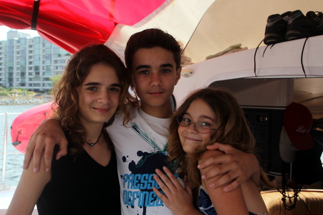 Les enfants grandissent (Sidney est sur la pointe des pieds) Bref, tout va bien, notre seul réel problème étant l'absence totale de pluie depuis près d'un mois, ce qui fait que nous allons bientôt manquer d'eau douce... Mais il paraît que certains endroits du globe sont innondés pour l'instant, alors ne nous plaignons pas ! |
||||||||||||||||||||
|
2 août 2013 - Whistler, village tantrique A peine arrivés à Whistler, nous avons rejoint notre logis, ce qui ne fut pas sans peine puisque nous sommes restés une heure devant la porte en attendant que le serrurier vienne nous ouvrir: en effet, les serrures ultra-modernes à carte sont très pratiques mais, quand l'électronique est défaillante, il devient franchement compliqué d'ouvrir la porte...
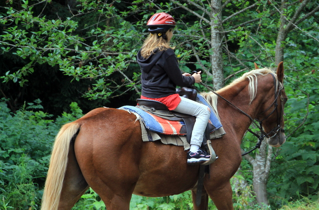 Syr Daria à cheval Une fois complété le tour du propriétaire, nous nous sommes empressés de rejoindre l'office du tourisme afin de faire un choix dans la pléthore d'activités que l'on nous proposait. Nous avons rapidement sélectionné la rando à cheval pour Syr Daria et la rando tout court pour toute la famille, eu égard aux tarifs déraisonnables pratiqués.
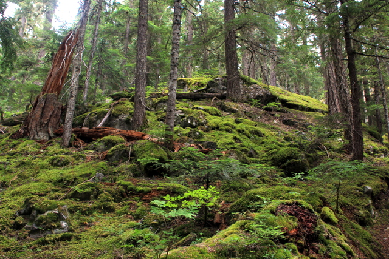 Forêt pluviale, un peu comme en Nouvelle Zélande Syr Daria s'est donc promenée à cheval dans les sous-bois avant que nous ne prenions la direction des montagnes pour une randonnée dans les cèdres géants et les sapins centenaires.
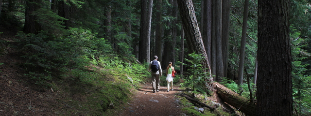 Rando au Canada. Les paysages sont une fois de plus somptueux et les sous-bois particulièrement mousseux, comme le champagne, mais en vert. On se promène sur des tapis d'épines décomposées, espérant à chaque épingle rencontrer un ours des montagnes ou un cougar des bois. Malheureusement, à part de monstrueux moustiques, nous n'avons rencontré aucune bestiole carnivore.
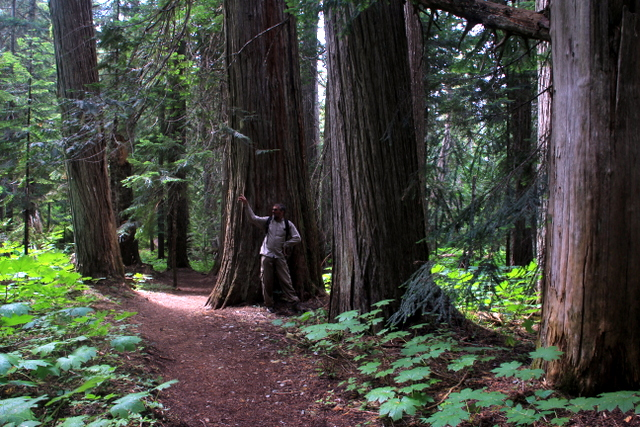 Forêt de cèdres. Mais, me direz-vous, pourquoi appeler ce billet "Village tantrique"? Tout simplement parce qu'en cette fin de semaine, était organisé un rassemblement de yogis au sein du village. Partout, on voyait aller et venir ces adeptes du yoga, se promenant avec leur petit tapis sous le bras, toujours prêts à faire des étirements ou des contorsions diverses.
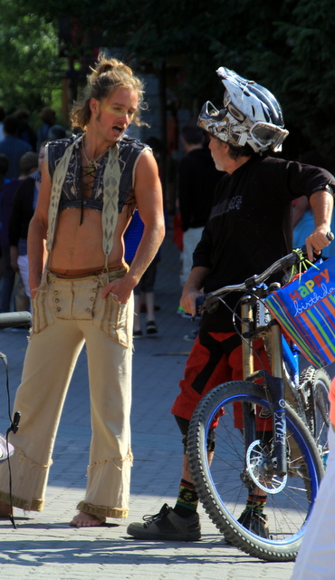 Représentant des elfes des forêts et des robocops des pistes Je me suis découvert un vif intérêt pour cette discipline, probablement, selon Cécile, du fait du grand nombre de jeunes femmes qui la pratiquent, dans des tenues parfois assez légères. Ce ne sont là qu'allégations fallacieuses aux sous-entendus graveleux, il va de soi que seul le souci esthétique guide ma nouvelle passion. |
||||||||||||||||||||
|
2 août 2013 - Whistler, village olympique Au début, il n'y avait rien, que des montagnes boisées, des ours et des trappeurs. A force, ces derniers finirent par s'ennuyer. Il est vrai que la cabane au Canada, c'est sympa, mais uniquement quand il fait beau. Et ici, en hiver, il fait froid et neigeux...
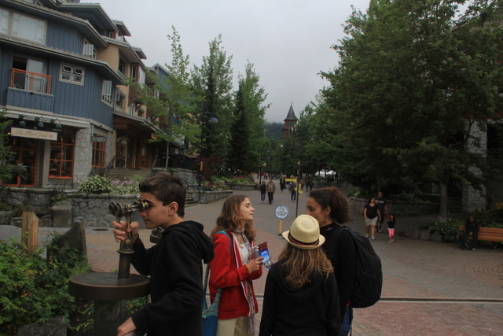 Le piétonnier de Whistler Un jour, le plus sage des trappeurs, un certain Jean Petitjean, eut un songe alors qu'il regardait les jeux olympiques à la télévision. "Pourquoi?", se dit-il, "Pourquoi n'organiserions-nous pas, nous aussi, les jeux olympiques?". En effet, pourquoi? En Colombie Britannique, il y a tout ce qu'il faut. Dans le lit des rivières, on trouve même des galets pour jouer au curling sur les lacs gelés...
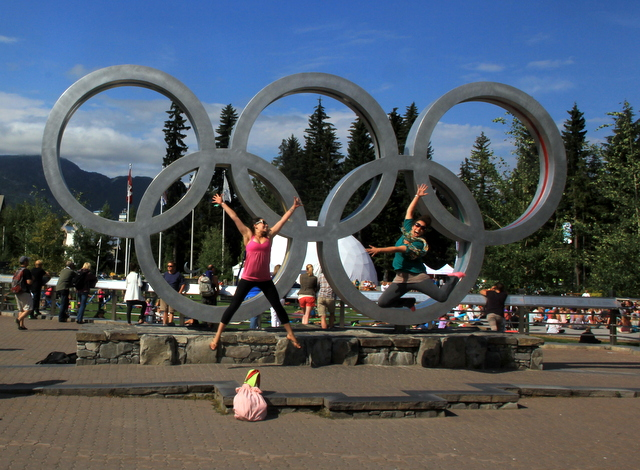 En 2010, les jeux olympiques d'hiver eurent lieu à Whistler Et pourtant, il manquait un village et des remontées mécaniques (et une piste de bobsleigh, me feront observer certains, mais ne nous égarons point dans les détails). Donc, Jean, s'exprimant avec éloquence devant ses confrères émerveillés, n'eut aucun mal à les convaincre de créer Whistler, ville entièrement artificielle peuplée uniquement de touristes, érigée à 100 km au Nord de Vancouver, au beau milieu de la forêt de conifères.
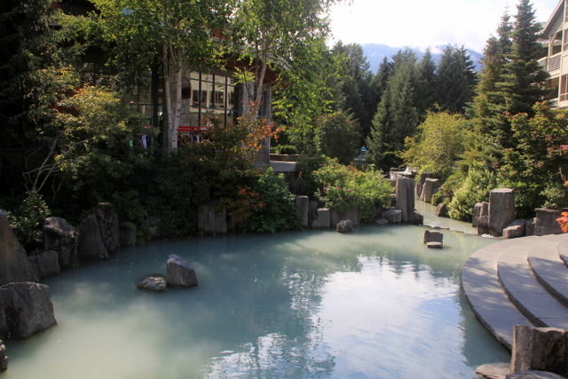 Il y a même un petit cours d'eau laiteux qui serpente dans le béton L'avantage de créer une ville ex nihilo est qu'on peut en choisir l'emplacement: inutile d'aller se percher à 1500m d'altitude à flanc de montagne, dans des endroits pentus aux rues sinueuses, on érige la cité dans la vallée, à plat, à 600m d'altitude, au milieu des lacs et au bout de l'autoroute. Ensuite, on construit des (faux) chalets et des hôtels genre montagnards, on crée un piétonnier au centre et de grands parkings autour et on obtient Whistler, ville fort agréable dont l'architecture à quelque chose de Disneyland.
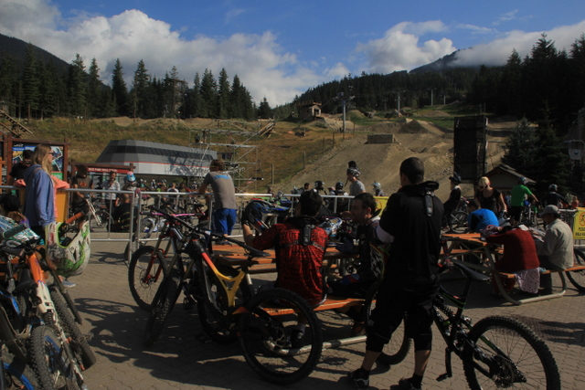 Arrivée des pistes de ski, euh non, de vélo Comme on est au Canada, la rentabilité du concept a été prise en compte dès l'origine. En été, la station n'est pas bêtement déserte: elle est remplie... de cyclistes. Les remontées mécaniques servent à hisser cycles et sportifs vers les sommets, de sorte qu'ils puissent dévaler la montagnes sur les pistes de ski adaptées pour le vélo. C'est vraiment fantastique.
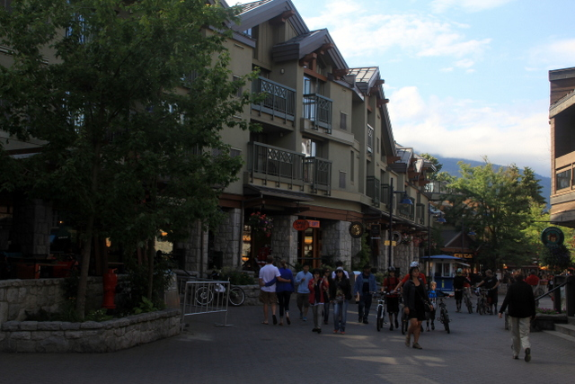 Centre ville La ville est toute mignonne, l'air est pur et tout est conçu pour les touristes: descente en vélo, randonnées, canoë, rafting, hydravion, bungy, tyrolienne géante, quad, etc. Pour peu qu'on ait le portefeuille bien garni, on peut s'amuser pendant des siècles dans un grand parc d'attraction pour adultes. Parce qu'à 130$/pers la demi-journée de canoë, 100$ la tyrolienne ou 40$ la remontée mécanique pour flâner sur les sommets (2200m quand même), il vaut mieux avoir quelques économies avant de venir ici. |
||||||||||||||||||||
|
30 juillet 2013 - Vancouver, False Creek Cette fois, ça y est: on chante dans le port de Vancouver, exactement comme Véronique Sanson et Philippe. Encore que pour ce dernier, je ne sois pas tout-à-fait sûr...
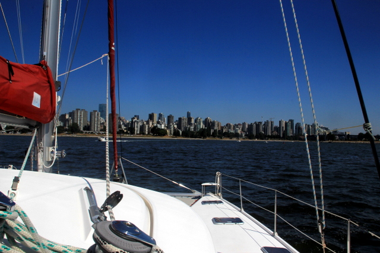 Arrivée dans la ville Vers 15 heures, nous sommes arrivés dans la baie de Vancouver que nous avons traversée sans nous retourner. Au fur et à mesure qu'on s'approchait de l'entrée du chenal qui mène au centre de la ville, nous voyions le pont qui l'enjambe s'affaisser ostensiblement.
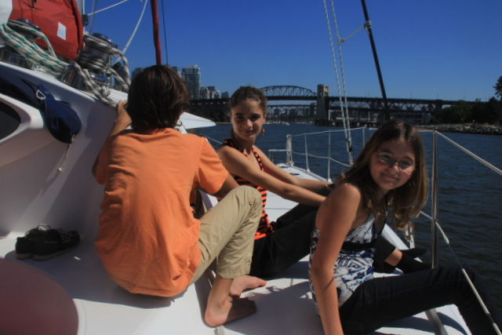 Pour une fois, les enfants sont sortis du carré C'est curieux, ce pont qui semblait si imposant vu de loin, aurait dû paraître encore plus grand à l'approche... Et bien non, plus la distance diminuait, plus il devenait clair que notre mât allait heurter le tablier du pont. J'ai mis les moteurs à l'arrêt mais, emporté par son élan et le courant, Let It Be continuait à progresser inexorablement.
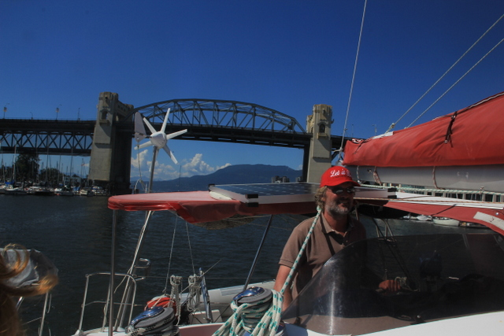 Le capitaine, très à l'aise dans le port. Pour finir, on est passé sous le pont, sans encombre, avec une marge d'au moins 5m... Ouf. Restait ensuite à gérer le nombre invraisemblable d'embarcations qui sillonnent le chenal: bateaux de plaisance, watertaxi, bus nautique, vedette de police, etc. Heureusement, impressionnés par la taille de notre navire, la plupart de ces petites unités se déroutaient pour nous laisser passer.
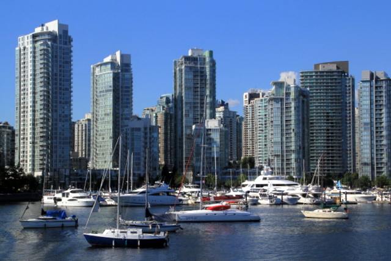 Let It Be au mouillage, en plein centre ville Au fond du chenal, nous avons trouvé un trou de souris pour jeter l'ancre, au milieu d'une nuée d'autres bateaux, par 7m de fond. Sans attendre, nous sommes allés à terre demander un permis temporaire d'ancrage, lequel nous fut octroyé sans paiement, sans passeport et avec le sourire. Décidément, on n'est pas aux US: on peut mouiller au centre d'une grande ville sans être soupçonnés de projets délictueux et en étant même bien accueillis.
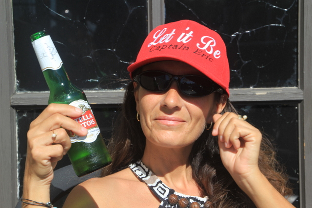 Et voilà le travail, on a bien mérité une bière... belge Il est vraisemblable que le Canada courre à sa perte vu le laxisme dont il fait preuve face aux étrangers. D'ailleurs, je suis sûr que les plaisanciers américains, nombreux par ici, ont organisé une milice pour se contrôler entre eux, histoire de se croire en sécurité... |
||||||||||||||||||||
|
27 juillet 2013 - Desolation Sound S'il est un lieu qu'il faut avoir visité dans sa vie, à part les Pyramides, le Machu Pichu, le Taj Mahal et l'Atomium, c'est bien Desolation Sound. C'est un endroit magnifique, un archipel dans l'archipel.
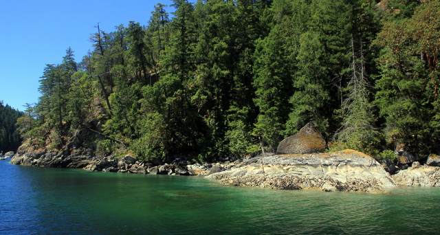 Encore une photo de chouchou Il y règne une douceur de vivre incomparable, l'eau y est chaude, contrairement aux autres fjords (et là, pour une fois, je ne déconne pas, l'eau de mer est à 24°C), la lumière apaisante, etc. Bref, Desolation Sound est à la Colombie Britannique ce que Houat est à la Bretagne: un joyau.
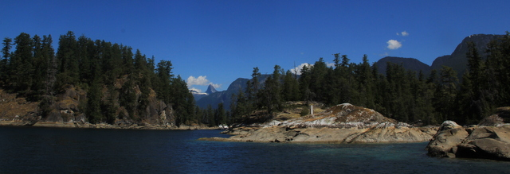 Desolation Sound, c'est beau Nous étions donc impatients d'enfin naviguer dans ces îles qui n'ont rien à envier à celles des côtes ioniennes, excepté les olives et la résina, évidemment. C'est maintenant chose faite: nous avons traversé cet éden avant de fuir vers d'autres cieux car, il faut bien le dire, il y a une telle concentration de bateaux dans chaque crique qu'en comparaison, Port Cros c'est Google + (merci Cyprien).
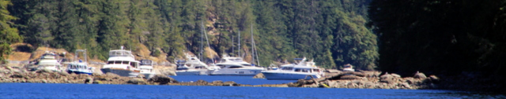 Mais c'est peuplé... Apparemment, l'endroit n'est un secret pour personne et l'instinct grégaire l'a une fois de plus emporté sur l'essence exploratrice puisque tout ce que Vancouver compte comme touristes des flots semble s'être donné rendez-vous dans le coin. On a déambulé pendant quelques heures parmi les dizaines de yachts qui semblent incrustés avant de chercher refuge dans une baie certes moins belle mais surtout moins peuplée.
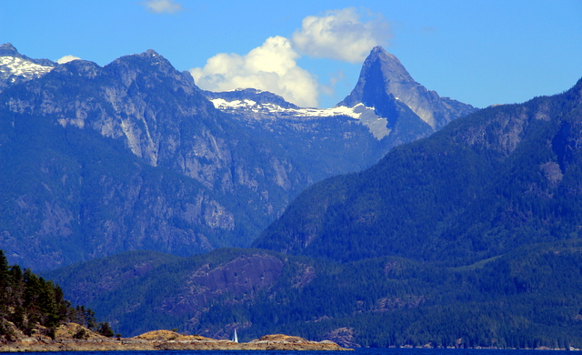 Mais c'est beau Un peu plus tard, profitant de la réelle différence de climat qui existe entre le nord (je pense à Prince Rupert où il faisait quand même un peu friscouillet) et le sud (ici donc), nous avons lancé le spi sous le regard admiratif de tous ces marins motorisés. Certes, on aurait pu le faire dans le froid, mais dans ce cas, Cécile n'aurait pas été si légèrement vêtue.
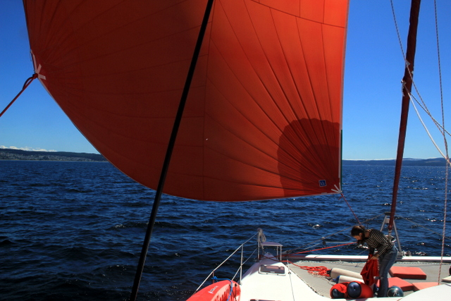 Même pas peur: on envoie le spi dans les canaux Une fois le soir venu, la température restant franchement clémente, nous avons, contre toute attente, fait cuire une bonne entrecôte au barbecue sur le pont de Let It Be. Et comme j'avais demandé moi-même la découpe, on s'est fait un morceau de 2 pouces d'épaisseur au lieu des semelles qu'ils nous vendent habituellement en grande surface. Yes. |
||||||||||||||||||||
|
25 juillet 2013 - Crawford Anchorage, les grands marnages Je ne cesse de le répéter, les marnages sont importants par ici. Et je n'hésite pas à ajouter: le matin, les nuages sont bas; le soir, fais ce qu'il te plaît, car les nuages sont partis.
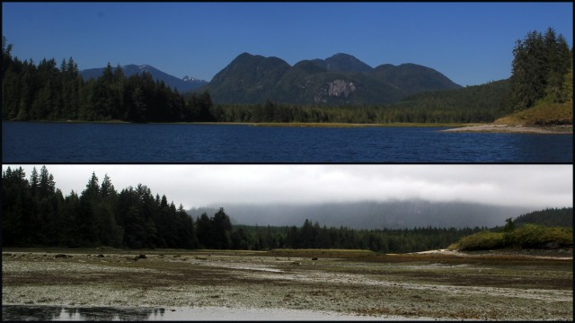 Le même paysage: marée haute en fin de journée, marée basse en début Mais plutôt que ressasser ces sempiternels lieux communs, j'ai décidé de vous le montrer, photos à l'appui. Dans l'échantillon ci-dessous, on distingue fort bien les couches multicolores qui s'empilent, telles des tranches de cake, preuve - s'il en est - de l'existence de Dieu et des marées.
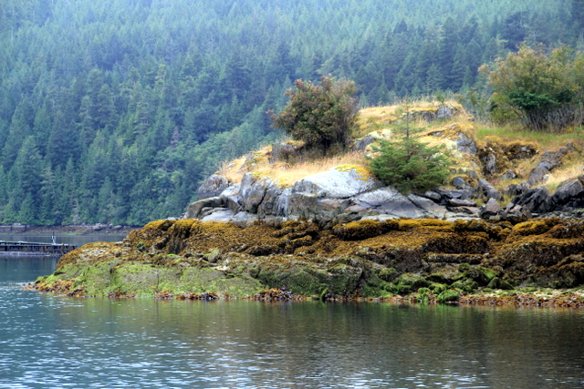 L'estran Et comme la marée était basse, Chouchou et moi sommes partis en exploration dans le lagon. Que cherchions-nous? Hormis un équilibre et un bonheur de vivre en symbiose avec la nature ainsi qu'un gros diamant, nous voulions photographier les étranges créatures qui peuplent les fonds marins. Comment peut-il y avoir autant de choses visqueuses sous la surface? C'est une question à laquelle je réfléchis sans relâche, sauf quand je prépare les repas.
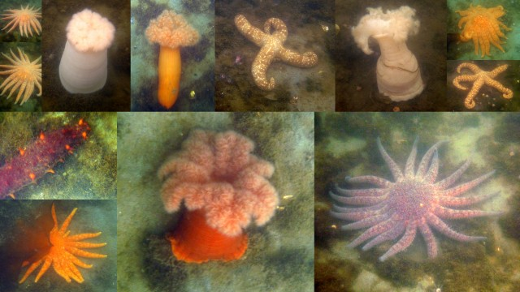 Toutes ces bêbêtes sont plus ou moins urticantes, paraît-il (car j'y ai pas mis les doigts) Autre conséquence du marnage de folie, combiné avec la topographie exceptionnelle de la région: les courants qui prennent naissance au détour des fjords. Leur violence est telle que le bateau semble parfois vaciller malgré la dextérité incroyable de son fier capitaine. Cécile est en effet très habile à la barre de notre batiment.
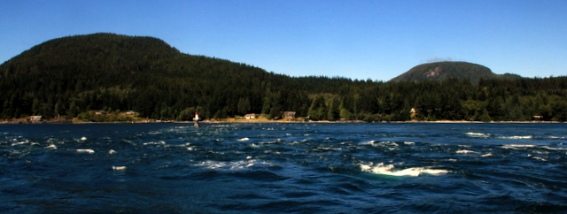 Les courants peuvent être violents Une fois les vilains nuages partis, le soleil règne en maître et nous innonde de ses bienfaisants rayons. On en profite pour se vautrer sur le pont en regardant défiler les centaines de milliers de sapins que compte la région. En contemplant ces forêts, je ne peux m'empêcher de penser que les Canadiens vont continuer à nous vendre du bois de construction pendant des siècles. Pensée intéressante, fruit d'une cogitation profonde.
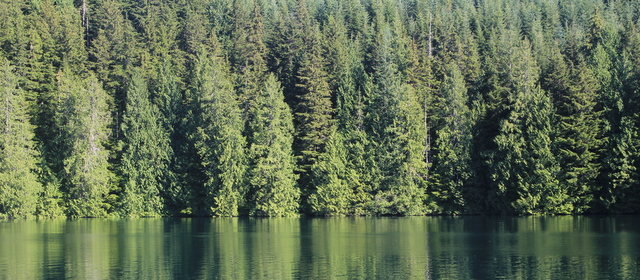 Aux grandes marées, les sapins ont les pieds dans l'eau Contrairement à une idée reçue, ces sapins ne sont pas tous identiques: il en existe différentes espèces, chacun possédant ses propres forme et teinte. La Colombie Britannique est au vert ce que les Tuamotus sont au bleu: une variation sur le même thème. |
||||||||||||||||||||
|
24 juillet 2013 - Port Harvey, marina privée Nous avons quitté Port Mc Neil au petit matin, vers 11h, après avoir fait un dernier saut à terre pour acheter du pain et vérifier la messagerie. Comme d'habitude, le ciel était gris et bas et la température un peu en dessous des normales saisonnières.
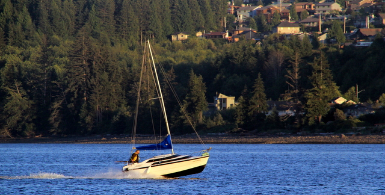 20 noeuds en monocoque de 30 pieds? C'est possible! Nous devions emprunter un chenal connu pour les courants violents qui y naissent suite à son étroitesse. Ayant pris en compte l'ensemble des paramètres (phase de la lune, hauteur d'eau moyenne, pression atmosphérique, longueur d'onde des vagues et altitude du plafond nuageux), je décidai de lever l'ancre à 10h56, afin de profiter des meilleures conditions pour le passage du chenal.
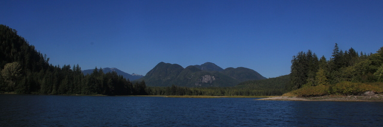 La baie de Port Hardy En fait, sa réputation est usurpée, probablement du fait du manque d'expérience des navigateurs qui y sont passés, vite impressionnés par quelque remous. Pour des marins de notre calibre, cela n'a posé aucun problème, Cécile s'offrant même le luxe de lire pendant que Let It Be voguait majestueusement sur les eaux. Vers 13h, comme chaque jour, les nuages se sont littéralement évaporés, laissant place à un soleil de plomb. La température est montée en flèche, culminant à 23°C.
Un peu plus tard, nous arrivions tel le messie à Port Harvey, bourgade flottante vivant de la pisciculture. Au bout de la baie, nous avons jeté l'ancre dans 8m d'eau avant d'aller visiter en annexe la marina avec pontons flottants d'une capacité d'accueil d'une dizaine de bateaux. La marina appartient à un couple de robustes trappeurs canadiens qui l'ont construite de leurs blanches mais calleuses mains. Ils ont tout fait: une maison, une passerelle, un ponton flottants, une supérette avec restaurant, etc. Vraiment impressionnant.
En plus, ils sont très sympathiques. On a profité de leur hospitalité pour visiter un peu le coin et tomber sur d'intrigants australiens vivant sur un yacht de 60 pieds qui nous ont vanté les mérites de leur précédent voilier: un Bélize 43 avec lequel ils ont traversé le Pacifique. |
||||||||||||||||||||
|
22 juillet 2013 - Port Mc Neil, 5 minutes d'arrêt Port Mc Neil, petit port de pêche situé au nord de l'île de Vancouver, est une bourgade peuplée de 2.700 âmes, dont les quelques spécimens que nous avons examinés étaient tous fort sympathiques.
Nous y avons trouvé un supermarché, un regonfleur de bouteille de propane, un soudeur de couvercle de casserole, un coiffeur fermé et même un médecin qui nous a demandé $230 pour une consultation. A ce tarif, soit on trépasse en s'étouffant, soit on évite d'être malade. C'est ce deuxième cas de figure qui s'est présenté: alors que je pensais y rester, j'ai décidé d'affronter ma douleur comme un grand et d'arrêter de me plaindre.
Nous sommes ancrés à deux encablures de la marina, de sorte que nous ne payons rien, tout en pouvant sauter dans le dinghy pour rejoindre la ville, notamment son réseau WiFi fort efficace... Demain, on repart: direction Vancouver que nous atteindrons au mois d'août après de nombreux détours. |
||||||||||||||||||||
|
18 juillet 2013 - Sur la route de Port Mc Neil Vous avez remarqué: il n'y a pas de billet le 17 juillet. C'est une règle que je me suis fixée dès mon plus jeune âge: ne pas écrire sur le blog le 17 juillet.
Ayant emprunté le Fitz Hugh Sound, nous filons vers le sud. Les conditions sont difficiles: de 4 à 5 noeuds de vent, parfois dans le nez, sur une mer aussi agitée qu'une piscine. Nos moteurs lancés à plein régime peinent à nous maintenir à 9 noeuds.
Apparemment, la transhumance s'est bien passé: on croise à nouveau des baleines à bosse. Elles ont fait le même chemin que nous depuis Hawaii. Ici, elles se goinfrent de harengs avec désinvolture. |
||||||||||||||||||||
|
16 juillet 2013 - Beales Bay, nid de frelons Plus rien n'arrête le thermomètre: 28.8°C dans le bateau aujourd'hui, on se croirait revenu aux Marquises, les taons en plus. Je craignais les moustiques mais j'avais oublié que les taons sont nettement plus gros. Non, ça je m'en souvenais mais j'ignorais qu'ils puissent attaquer en si grand nombre.
Le matin, après une nuit sans nuage, la mer est lisse comme un miroir et lorsque nous glissons sur l'eau, Let It Be semble être en lice pour un concours de patinage artistique, les pirouettes en moins.
Après un bref passage en ville afin d'acheter du lait, des légumes et de l'internet, nous avons poursuivi notre route. Hélas, Internet était faisandé et nous n'avons pu le consommer, raison pour laquelle le site n'est pas encore à jour.
Un peu plus tard, nous avons trouvé un mouillage désert au milieu d'un labyrinthe d'îlots. J'espère avoir pris bonne note du chemin pour venir jusqu'ici, sans quoi nous devrons rentrer à pied quand Let It Be sera pris par les glaces.
|
||||||||||||||||||||
|
15 juillet 2013 - Dowager Island, Crique inconnue Cette fois, ça y est, l'été est arrivé. Plus un nuage dans le ciel.
Nous en avons profité pour batifoler sur les flots, à la recherche de saumon.
Bon, je reconnais que j'ai pas grand-chose à dire, les photos parlent d'elle mêmes.
Et sinon, pas beaucoup d'Internet par ici. C'est fou ce que la Colombie Britannique peut être mal connectée. Il faut dire qu'il n'y a pas foule par ici.
|
||||||||||||||||||||
|
14 juillet 2013 - Work Bay, trou de souris La lente progression vers le sud et la chaleur continue. Aujourd'hui, grand beau temps au programme: la température monte jusqu'à 24°C. Yes !! Après avoir passé une nuit vraiment paisible, nullement bercés du fait de l'absence totale de vagues, vaguelettes ou même ridules, nous sommes partis vers d'autres aventures.
Malgré tout, la navigation reste exigeante car les eaux charrient un nombre impressionnant de débris végétaux de toutes tailles. Ils sont perceptibles mais seulement à relativement courte distance, ce qui implique la présence permanente d'un vigie en tête de mât.
Aujourd'hui, nous avions 35 nautiques au programme mais, en chemin, nous avons croisé maman orque et ses deux marmots. Nous avons alors entamé une course poursuite haletante à près de 2 noeuds, suivant les cétacés afin de les mitrailler.
Evidemment, cela n'a pas contribué à augmenter notre moyenne mais, honnêtement, on s'en tape. A choisir, on préfère courser les orques et pêcher le saumon. Encore que sur ce dernier point, il faut reconnaître que la tâche est plus ardue qu'il n'y paraît, ces couillons continuant à se payer ma tête à longueur de journée.
Et sinon, cela devient lassant, on a trouvé un mouillage tout-à-fait magnifique (je n'ose plus dire exceptionnel car la magnificité semble être la règle par ici). L'ancre gît par 15m de fond, au milieu d'une crique ensapinée de droite à gauche, en passant par devant..
|
||||||||||||||||||||
|
13 juillet 2013 - Green Pit, mouillage insolite Coupe claire Lentement, les nuages se dissipent et la température remonte en flèche: 15°C dans la cabine ce matin. On en profite pour continuer notre périple dans cette Colombie qui n'a décidément de Britannique que le climat.
Les fjords sont étroits et profonds, à tel point qu'on peut naviguer à quelques mètres des berges sans crainte de toucher. On peut ainsi longer d'anciennes villes oubliées ou de larges zones où les sapins ont servi à faire des cercueils.
Le soir, nous trouvons un mouillage calme dans des eaux tellement sereines qu'elles reflètent fidèlement l'image des montagnes qui nous entourent. On entre alors dans le monde du milieu, peuplé de songes et d'aigles impériaux. Au loin, les saumons font des cabrioles et les otaries soupirent. C'est un monde interlope.
|
||||||||||||||||||||
|
12 juillet 2013 - Grenville Channel, Let It Be returns Long d'une quarantaine de miles et large de 500 à 1000m, le Grenville Channel est voie d'eau fort empruntée, notamment par les ferries qui relient Port Hardy à Prince Rupert, et inversement.
En certains points, le courant peut atteindre 5 noeuds, ce que nous avons mis à profit pour économiser du gasoil. Dès que nous sommes entrés dans l'étroit chenal aux côtes accores et boisées, nous avons croisé une famille d'orques qui nous ont superbement ignorés. Comme nous naviguions à plus de 7 noeuds et que l'objectif de l'appareil photo était embrumé, nous n'avons pu immortaliser ce moment.
Un peu plus tard, nous avons jeté l'ancre par 10m de fond, au détour d'un petit fjord sinueux. A nouveau, nous avons pu expérimenter un phénomène bizarre que je ne m'explique pas encore: sur 3 mouillages, nous avons eu 3 fois du vent venant du côté ouvert, quelle qu'en soit l'orientation. C'est louche... |
||||||||||||||||||||
|
11 juillet 2013 - Grenville Channel Malgré une météo contraire, nous continuons notre voyage vers Vancouver. Les nuages sont si bas qu'ils restent accrochés aux sapins qui tapissent les montagnes. En outre, un petit crachin persistant contribue à rendre les 12°C ambiants particulièrement incomfortables. Philippe, rends-nous le soleil, tu es parti avec...
Après 20 nautiques de navigation bien tranquille sur une mer d'huile, nous avons franchi l'étroiture du diable avant de rejoindre un mouillage serein et silencieux.
Vers 22h, le vent s'est levé, nous obligeant à changer de mouillage à la hâte. Heureusement, en été, il fait relativement clair jusqu'à 23h30 et nous avions prévu cette éventualité. Notre mouillage de secours était distant de quelques centaines de mètres et nous l'avons rejoint sans difficulté.
|
||||||||||||||||||||
|
10 juillet 2013 - Le nord La météo annonçait une période pluvieuse sur la région. De fait, il a plu. Toute la journée. Les nuages nous sont tombés dessus, littéralement. Du coup, on n'a pas bougé.
J'ai vérifié: 10°C dehors, 14°C dedans à 14h...C'est en ces moments qu'on regrette les tropiques. Les paysages sont certes magnifiques mais faut pas exagérer quand même... Si la température n'augmente pas dans les prochains jours, j'écrirai une lettre au syndicat d'initiative. Je ne prends pas trop de risque: dès demain la météo nous annonce le retour du soleil. |
||||||||||||||||||||
|
9 juillet 2013 - Premier mouillage au Canada Si l'on prend comme définition du mouillage le fait de mouiller l'ancre, alors nous venons de réaliser le premier du genre au Canada (et le dernier en date était à Molokai, il y a deux mois. Dieu que le temps passe vite).
La navigation sous voile ne semble pas être très adaptée à la Colombie Britannique. Il n'y a pas de vent en cette saison et, de toute manière, dans ces couloirs, il serait contraire ("Vent dans le couloir ne gonfle pas les voiles", comme on dit chez nous). C'est la raison pour laquelle nous croisons beaucoup de yachts à moteur et très peu de voiliers. En conséquence, nous avons quitté Prince Rupert et fait route au sud, alternant moteur bâbord et moteur tribord, en essayant de ne pas nous perdre dans le dédale de fjords parsemé de bouées tout en évitant les nombreux troncs qui flottent à la surface.
En fait, la seule difficulté, outre celle de ne pas se perdre en route, est de tenir compte des courants générés par les énormes marées (plus de 7 noeuds, par endroit et jusqu'à 12 noeuds au passage de Seymour Narrows dont on reparlera). Il convient donc de planifier la route avec soin avant de partir. En chemin, il faut rester à la barre en permanence, ce qui permet d'éviter les obstacles tout en observant les paysages. Les îles couvertes de conifères sont de toutes les tailles, certaines offrant des pentes abruptes, d'autres étant à peine immergées.
Après quelques heures de navigation, nous avons trouvé une petite crique bien abritée où nous avons jeté l'ancre par 11 mètres de fond, +/- 6m de marnage... Dès l'arrêt des moteurs nous avons apprécié le silence absolu qui règne en ces lieux éloignés de la civilisation. Le sérénité qui s'en dégage est extraordinaire, troublée seulement par le croassement sporadique des corbeaux et le vol planant des aigles à tête blanche. L'endroit devait être bien choisi car nous avons été rejoints par deux bateaux de pêche locaux en fin de journée. |
||||||||||||||||||||
|
7 juillet 2013 - Au revoir Philippe Auparavant, j'écrivais toujours 'Adieu, Philippe' mais comme il revient chaque année, je lui dis 'A bientôt'. Sa compagnie est toujours aussi agréable, il est cultivé, courtois et ne pète jamais à table. C'est un homme élégant, en quelque sorte. Mais n'allez pas croire que je suis en amour quand même... Bref, Phil est parti et Cécile erre désoeuvrée sur le pont.
A tel point qu'un pêcheur l'a prise en pitié et lui a expliqué comment on préparait les crabes que l'on pêche en-dessous du bateau. Avec un petit sourire narquois, cet impudent jeune homme expliqua à Cécile qu'il fallait prendre le crabe bien vivant à deux mains, le retourner puis le frapper vigoureusement contre une arête en métal afin de le casser. Ensuite dans un mouvement de torsion, on le coupe en deux, chaque moitié toujours vivante. Enfin, on arrache les pattes. Le monsieur s'attendait à ce que Cécile s'enfuie en courant, écoeurée par tant de sauvagerie bestiale.
Mais il ne connaît pas ma douce... Il n'a pas vu ce qu'elle faisait des thons qu'on pêche... Je pense qu'il se demande encore comment une charmante jeune femme peut éxécuter un crabe avec autant de facilité: Cécile lui a arraché les pattes sans même sourciller. C'est lui qui est parti en pleurant. N'empêche, on a mangé les crabes et ils étaient excellents !!
Et sinon, ce sera bientôt le silence Internet. Nous allons quitter Prince Rupert dès demain pour nous perdre dans les 5.000 îles qui nous séparent de Vancouver. La descente sera longue et fantastique mais peu connectante. Rassurez-vous, Cécile prendra des photos que j'illuminerai de commentaires aussi instructifs que pertinents tout au long du périple. |
||||||||||||||||||||
|
4 juillet 2013 - Escapade en Alaska, 3ème partie Comme chaque année, le 4 juillet est l'occasion de célébrer la grandeur du pays de l'oncle Sam. A Hyder comme dans tout le pays, les américains se recueillent en remerciant le ciel d'être les citoyens d'une si grande nation. Enfin, pour être honnête, à Hyder, le 4 juillet reste assez anecdotique. Il ne s'y passe pas grand-chose, à part le 'longest drive contest', version golfique à peine plus évoluée du célèbre concours de celui qui pisse le plus loin.
Quant à nous, indifférents aux frasques indépendantesques, nous cherchions désespérément des ours. Nous étions venus pour cela et nous restions sur notre faim. C'est alors que Philippe, dans un moment de lucidité improbable, eut l'idée d'interroger un autochtone.
Je vous laisse deviner... Où trouve-t-on des ours sauvages? La réponse est simple: dans la décharge. Eh oui, les ours, tenaillés par la faim, se retrouvent dans la décharge publique où ils trouvent toujours de quoi se sustenter. Nous avons passé plusieurs heures dans le dépotoir, bien à l'abri de notre véhicule, à regarder les plantigrades farfouiller dans les immondices. C'est très romantique.
Heureusement, il y a aussi des ours sauvages, que l'on croise au détour d'un chemin, au milieu de nulle part. Ces boules de poils sont vraiment mignonnes et l'on a toutes les peines du monde à ne pas sortir de la voiture pour les caresser. Il paraît qu'ils sont imprévisibles et peuvent vous déchiqueter en quelques coups de patte...
Plus tard, nous sommes passés au 'Seafood Bus', afin de manger 'le meilleur fish and chips du coin'. De fait, on s'est régalé, profitant même de l'occasion pour nous asseoir à la place occupée jadis par Robin Williams himself. On a eu droit à un excellent Halibut, un poisson délicieux mais assez étrange: à l'image de la sole, il longe le sol marin, à tel point que l'oeil du fond migre vers le haut. Ce poisson à chair blanche peut peser près de 100 kilos et mesurer jusqu'à 2m de long.
Après 2 nuits passées en Alaska, nous avons rejoint nos pénates à Prince Rupert, non sans apercevoir l'un ou l'autre ours sauvage le long de la route. Ce court séjour en Alaska nous aura décidément mis l'eau à la bouche... Il se pourrait qu'on revienne un jour pour explorer plus avant ce pays intrigant. |
||||||||||||||||||||
|
3 juillet 2013 - Escapade en Alaska, 2ème partie C'est bien beau d'aller en Alaska, encore faut-il y faire quelque chose (ketchos, comme dirait Hugues). D'emblée, je casse le mythe: non, il ne gèle pas à pierre fendre en juillet en Alaska (dans le sud, en tous cas). Il fait même plutôt agréable, un poil plus chaud qu'à Prince Rupert en bord de mer. Depuis que nous sommes arrivés dans le grand Nord (faut pas exagérer quand même, on est à la latitude du Danemark), nous essayons tant bien que mal de nous faire aux rythmes circadiens du coin. Nous étions habitués aux rythmes des tropiques: coucher du soleil à 18h, lever à 6h. Ici, à 23h, il fait encore clair, ça perturbe...
Donc, après la route d'hier, nous étions exténués et, à la tombée du jour, vers 23 heures, nous avons décidé de nous rendre au seul bar de Hyder, où nous attendaient tous les habitants en âge de boire, soit 5 personnes. Sans attendre, nous avons déclaré à la barmaid: "On est venu se faire hydériser". Tout à coup, la musique s'est arrêtée, les trappeurs ont cessé de braconner, les flocons de neige sont restés en suspension et les castors ont interrompu leur barrage. La barmaid a aligné des verres sur le comptoir, 3 petits et 3 grands. Elle a ensuite rempli les grands verres d'eau et les petits d'un alcool transparent. Ensuite, elle a annoncé: "Cul sec ou c'est la tournée générale". Nous avons docilement obtempéré, en récitant une petite prière tout en portant le verre à nos lèvres. Ensuite, tout est devenu confus. Les trappeurs ont repris leur rigolade et la barmaid nous a montré l'étiquette du breuvage: alcool de maïs à 75%. Zonder commentaar.
Maintenant que nous sommes hydérisés, nous faisons partie de la communauté et nous pouvons aller où bon nous semble, comme au glacier Salmon, par exemple. En fait, tout bien considéré, c'est même le seul endroit où aller puisque l'unique route qui passe par Hyder file en serpentant dans les montagnes vers ledit glacier. On se demande d'ailleurs pourquoi ils ont cru bon de construire une voie carrossable dans ces montagnes boisées.
La réponse à cette question apparaît après quelques kilomètres: ils construisent un barrage en fond de vallée en collectant l'eau des multiples rivières qui dévalent les pentes abruptes. Un peu plus loin, on se retrouve face au glacier lui-même. Nous pensions avoir vu ce genre de spectacle en Nouvelle Zélande mais, apparemment, on n'était pas dans la bonne division. Quel spectacle étourdissant.
En plus, pas un seul panneau "Interdit de faire ci, interdit de faire ça, gnagnagna". On a profité de cette grande latence pour emprunter un petit chemin, garer la voiture et marcher jusqu'au pied du glacier, ce qui nous avait été fermement interdit en NZ. Ici, nous étions seuls et nous en avons pris plein les yeux. Un régal. La sauvagité des lieux est vraiment saisissante...
Sur le chemin du retour, nous nous sommes arrêtés en bord de rivière, à une station de comptage des saumons... J'imagine votre surprise mais, effectivement, vers le milieu du mois de juillet, les premiers saumons arrivent de l'océan, après avoir remonté les rivières jusqu'au lieu de leur naissance pour pondre à leur tour. Ils retrouvent les eaux bleutées résultant de la fonte des glaciers en amont. Malheureusement, nous étions un peu tôt en saison et les saumons n'étaient pas encore au rendez-vous, à notre grand désarroi car cela signifie que les grizzly n'étaient pas encore là non plus. Ils viendront plus tard se nourrir des saumons en fin de vie errant sans but dans les rivières d'eau pure... |
||||||||||||||||||||
|
2 juillet 2013 - Escapade en Alaska, 1ère partie Après avoir célébré dignement l'indépendance du Canada qui, cette année, tombait le 1er juillet, nous étions accoutumés à nos nouvelles conditions atmosphériques: 20°C la journée et 12°C la nuit. Nous avons alors décidé de sortir des sentiers battus. Sans hésitation, nous avons mis le cap sur l'Alaska.
En bateau, l'Alaska est distante de 40 km, ce qui représente quelques heures de navigation pour un navire tel que Let It Be. Mais nous aimons les défis. Nous avons donc décidé de louer une voiture et de nous rendre à Hyder, à quelques 180km à vol d'oiseau mais à plus de 400km à vol de voiture, afin de nous faire déhydériser.
Certes, me direz-vous, mais qu'est-ce donc que cette nouvelle facétie? En fait, Hyder est un petit village situé en Alaska, qui présente la particularité d'être totalement quelconque. Il n'y a rien de spécial, à part un tord-boyau fort réputé qu'il convient de goûter une fois dans sa vie, si l'on aime les expériences extrêmes.
En outre, la route qui passe par Hyder mène au Glacier Salmon, qui, aux dires des locaux, est le plus beau glacier du monde, sans erreur possible. Voilà deux bonnes raisons de se rendre à Hyder, sans compter notre désir impérieux de fouler le sol alaskien, afin de pouvoir nous la péter un peu plus encore lors des soirées mondaines.
Partis vers 11h du matin, nous avons traversé des paysages grandioses (et insolites) et fort peu peuplés. C'est bien simple, de Terrace, la grande ville du coin, à Stewart, à la frontière américaine, soit sur près de 300 km, nous n'avons pas rencontré un seul distributeur de coca... J'ai cru qu'on allait mourir. Heureusement, la route serpentait entre ciel et terre dans une contrée à la sauvage beauté, ce qui nous permit de surmonter notre déficit hydrique. On a même croisé un convoi ferroviaire qui mesurait plus de 3 km de long. Interminable. Quand la locomotive entre en gare les derniers wagons ne sont pas encore partis...
A l'approche de la frontière, nous pouvions sentir l'anxiété croître dans le véhicule, tant était vivace le souvenir des tortures que nous avaient infligées les douaniers hawaiiens. Cécile avait fébrilement préparé les passeports ainsi qu'un discours glorifiant le pays de la liberté afin d'amadouer les fonctionnaires zélés et fiers de défendre les frontières de leur puissant état. C'est alors que, contre toute attente, nous nous sommes retrouvés à Hyder, en Alaska, sans avoir rencontré le moindre poste douanier... Eh oui, c'est pas une blague, mais il faut dire que la route qui mène à Hyder ne va nulle part: une fois arrivé au village, vous pouvez soit faire demi-tour et revenir au Canada, soit vous faire déhydériser. C'est cette dernière option que nous avons choisie, car elle nous permettait d'expérimenter un breuvage local dont l'étiquette précisait qu'il titrait 75% d'alcool... Quant à la suite de nos aventures en Alaska, ce sera pour le prochain billet!! |
||||||||||||||||||||
|
1 juillet 2013 - Premières impressions Après 19 jours d'une traversée fort calme et bien motorisée, nous avons touché terre, au terme d'une dernière journée passée à errer dans un dédale d'îles boisées, que nous n'avons malheureusement qu'entrevues tant le brouillard était épais. Sans la présence de Philippe Armstrong à bord, nous aurions certainement risqué la collision avec l'un des très nombreux pêcheurs du cru. Pour ceux qui s'interrogent, Philippe ne s'amuse pas bêtement, il signale notre présence aux éventuels autres navires en utilisant ce que l'on appelle une corne de brume (et non pas une trompette...).
La cartographie électronique étant très précise, nous avons pu néanmoins retrouver le chemin de Prince Rupert, petit port caché au détour d'un ultime îlot. Par un concours de circonstances fort heureux, la brume s'est levée au dernier moment pour permettre notre arrivée triomphale sous les yeux ébahis de la foule en délire.
Ayant contacté le PRYC (Prince Rupert Yacht Club), nous avons gentiment été conviés à prendre place sur le quai des visiteurs. Le manager du club est même venu nous accueillir et amarrer le bateau. A notre grande surprise, il a même proposé d'emporter nos poubelles ! Après le mépris américain, la gentillesse canadienne nous a presque parue suspecte. Mais non, il voulait vraiment nous aider. Unbelieveubole.
Aussitôt, j'ai sauté sur le quai pour me diriger d'un pas décidé vers le téléphone et entamer les procédures d'entrée avec les douanes. Une demie heure plus tard, les préposés arrivaient pour la visite du bateau. Quel choc ! C'étaient des gars souriants, qui s'intéressaient à nous et nous ont renseigné sur les bons plans dans et aux abords de la ville. Après les névrosés américains, les douaniers canadiens nous ont paru incroyablement sympathiques.
Dès les formalités accomplies, nous nous sommes rués sur le premier restaurant où nous avons dévoré un steak/homard arrosé d'un excellent vin canadien. En absence de congélateur, la fin de la traversée s'était avérée sobre sur le plan gastronomique: lard, patate et choux, voire ravioli ou soupe. C'est dire si l'on s'est laché...
Sans perdre de temps, nous avons enchaîné par quelques courses, histoire de réapprovisionner le navire. Ensuite, nous nous sommes mis en quête d'une voiture de location afin de partir en exploration dans l'arrière pays. Vu du quai, les montagnes enneigées au loin ont l'air magnifique. En outre, l'Alaska est à un jet de pierre, ce serait con de rater cela... |
||||||||||||||||||||
|
11 au 30 juin 2013 - Traversée Hawaii-Canada La traversée de Hawaii vers le Canada est longue de 2200 nm à vol d'oiseau mais il convient de faire un large détour autour de l'anticyclone si l'on veut avoir du vent. Ce sont en définitive quelques 2700 nautiques (5000 km) qu'il faut parcourir.
Ayant quitté Hawaii par 30°C, nous avons rapidement progressé dans les alizés soutenus. Au fur et à mesure que nous gagnions le nord, la température et le vent diminuaient, si bien que Let It Be s'est retrouvé au moteur par 15°C, les coques trempant dans une mer glacée.
Philippe, notre équipier, nous a vraiment aidé lors de cette traversée, tant par ses prises de quart en milieu de nuit que par ses calculs de trajectoire incluant la vitesse et la direction du vent, la force des courants, les phases lunaires, la trainée hydrodynamique de Let It Be, la probabilité de heurter un OFNI (objet flottant non identifié) et évidemment, les effets relativistes lorsqu'on approche de la vitesse de la lumière. Bref, Philippe a résolu des équations aux dérivées partielles dans un espace à n dimensions par transformation en série de Fourrier pendant une bonne partie de la traversée. Hélas, il n'a rien pu faire pour empêcher Cécile de trépasser une fois encore lors des premières 72 heures.
Pour le reste, nous avons pu valider 2 hypothèses: d'une part, le système AIS (détection des bateaux) fonctionne bien (pas moins de 10 cargos croisés) et, d'autre part, malgré leurs conseils paternalistes en matière d'environnement et leurs lois ineptes pour 'protéger' le corail, les ricains ne sont pas capables de maintenir le Pacifique nord dans un état de propreté acceptable. C'est le lieu le plus pollué que nous avons vu jusqu'à présent, loin devant les eaux des états soi-disant sous-développés comme les Tonga ou les Fidji. Ici, pas une heure sans que l'on croise des bouées à la dérive, des morceaux de plastique, des cordages, etc.
Et sinon, il fait froid. Diable. On n'est plus habitué. 8°C la nuit du solstice, à 1000 km au large du Canada par 47°N. Comme on n'a pas de chauffage, il fait 12°C dans les cabines le matin. Aaaah glagla. Il paraît que ça ira mieux lorsqu'on se rapprochera des côtes. Heureusement, le vent est clément, la mer assez calme et lorsque le soleil brille à midi, il fait même 17°C dans le carré.
Voilà, on devrait mettre 19 jours pour traverser. En définitive, une traversée peu venteuse dont la seule difficulté, outre la relative longueur, est la température, anormalement basse pour des navigateurs tropicalisés. |